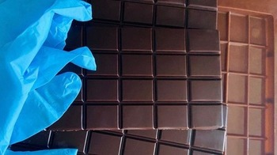

Натуральный шоколад ручной работы
Приветствуем всех любителей шоколада!
Шоколад и конфеты ручной работы — вкусные, нежные, тающие во рту, наполненные
тонким ароматом страсти.
Их по достоинству оценят настоящие гурманы, знающие толк в хорошем шоколаде.
Наши конфеты изготавливаются вручную — каждая конфета является уникальным произведением
кондитерского искусства.
В некоторых странах такой шоколад называют organic,
Волшебный вкус шоколада приготовленного из специально
отобранных какао бобов и 100% масла какао определенно удовлетворит самый изысканный вкус.
В своих начинках мы используем только натуральные компоненты — сливки, орехи,
сливочное масло, ягоды и фрукты.